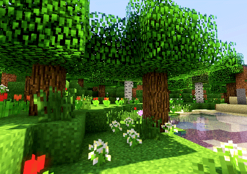
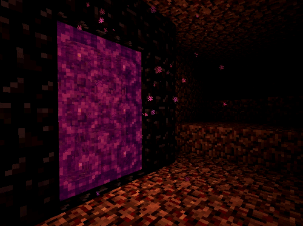
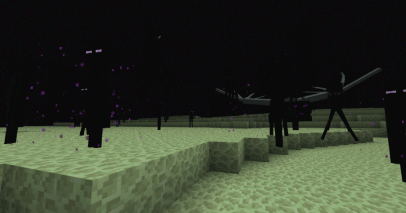

Superfície: A Superfície ou Mundo Superior é a dimensão inicial em que o jogador nasce em um mundo de Minecraft, e tem as principais características:
Nether: O Nether é uma dimensão infernal, caracterizada por oceanos de lava e fogo, e precisa fazer um Portal do Nether para acessar. Criaturas horrendas como Ghasts e Piglins, biomas e estruturas como bastões remanescentes aparecem pelo o Nether, bem diferente do que aparece na Superfície.
End: O End é uma dimensão escura, parecida com o espaço consistindo em ilhas separadas no vazio feitas de pedra do End, e é o lugar em que se zera o jogo.
